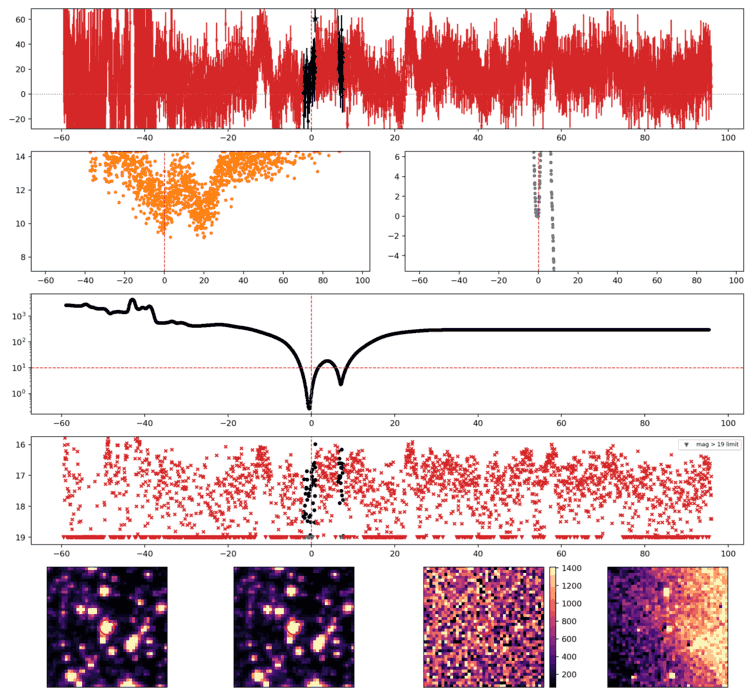

Search centered on refined position (93.8274031, +1.3898143 deg). Gaia coordinates are at J2016.0; proper motions are shown, without epoch propagation. A positional match does not change the candidate flags.
| Source ID / catalog entry | Separation (arcsec) | RA (deg) | Dec (deg) | G (mag) | BP (mag) | RP (mag) | Parallax ± error (mas) | PM RA* ± error (mas/yr) | PM Dec ± error (mas/yr) | RUWE | Variability |
|---|---|---|---|---|---|---|---|---|---|---|---|
| 3122893398352553216 | 4.082 | 93.8264527 | 1.3891956 | 16.817 | 17.467 | 16.005 | 1.053 ± 0.073 | 3.297 ± 0.073 | 8.294 ± 0.067 | 1.049 | NOT_AVAILABLE |
Retrieved 2026-10-26T06:56:18.362435+00:00